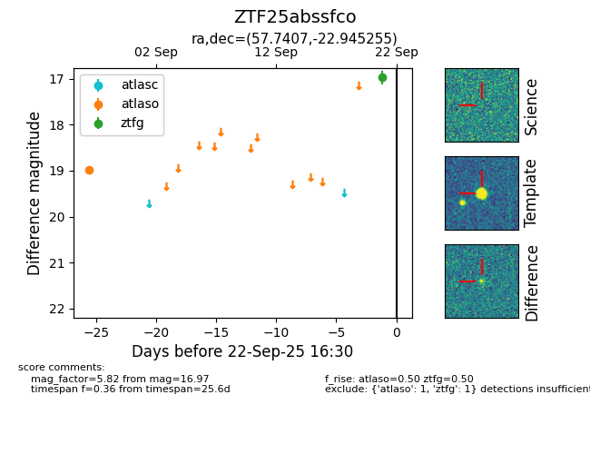

FINK: ZTF25abssfco
Lasair: ZTF25abssfco
ALeRCE: ZTF25abssfco
ZTF25abssfco (ztf,fink)
equatorial (ra, dec) = (57.7407,-22.94526)
galactic (l, b) = (217.2820,-49.33127)

last atlaso=18.98, ztfg=16.97
1 atlaso, 1 ztfg detections